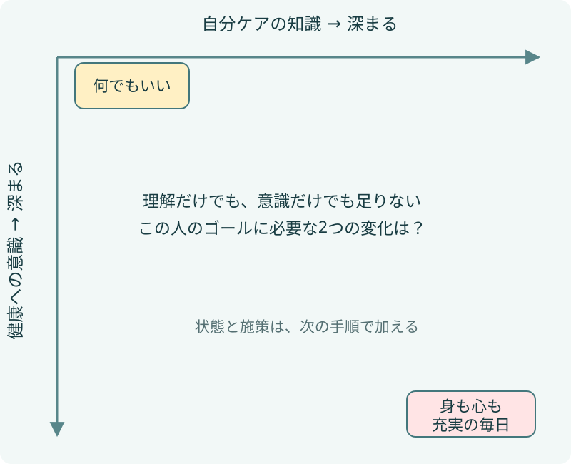
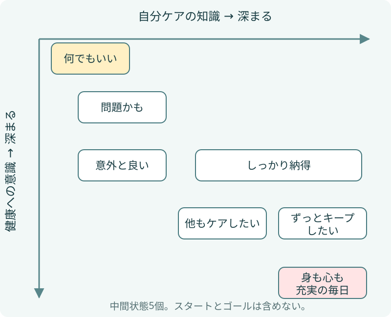
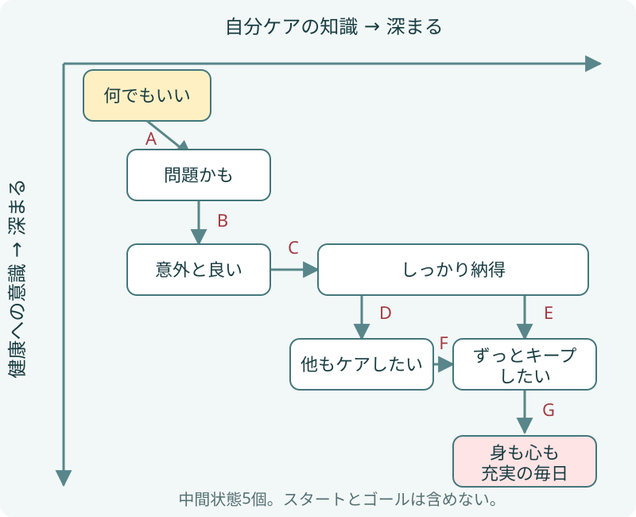
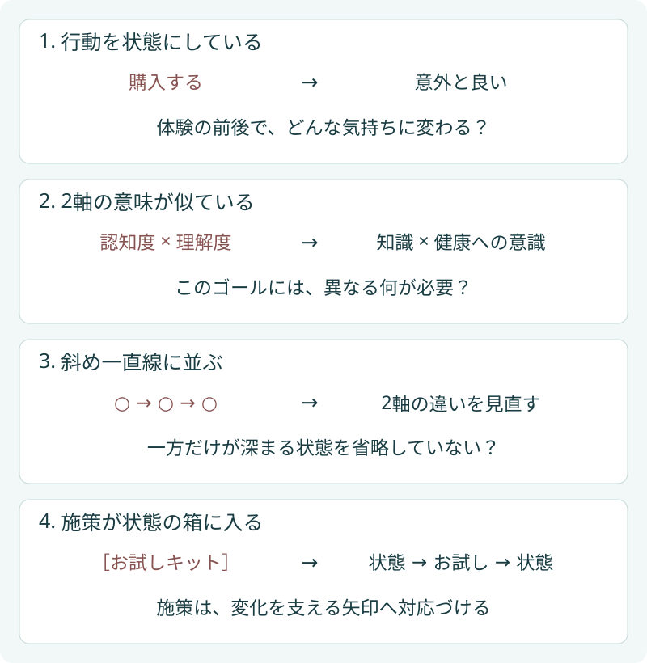

公式ガイド / 清水 誠
コンセプトダイアグラムの描き方｜図解と具体例で学ぶ8つの手順
コンセプトダイアグラムは、ゴールから逆算して2つの心理軸を決め、顧客の状態とその変化を配置し、変化を支える施策と評価指標を加えて描きます。このページでは、架空のヘアケア事業を題材に、白紙から図を組み立てる8つの手順を説明します。
描くのは、商品を売るまでの手順ではありません。顧客が何に気づき、何を理解し、どう暮らせるようになるのか。その変化を企業がどう支援できるかを考えるための図です。
まず、完成した図を見てみよう
スマートフォンでは図を横にスクロールして読めます。

スタートは「何でもいい」、ゴールは「身も心も充実の毎日」。横軸の「自分ケアの知識」と縦軸の「健康への意識」が深まるにつれ、5つの中間状態を経てゴールへ近づく、という仮説です。特定の商品への効果や、実際の顧客調査結果を示す事例ではありません。
以下の途中図は、この講義図を描き方の説明用に整理し直したものです。位置や矢印は模式的に表し、施策と評価指標は検証前の候補として示しています。
この8手順は作業の進め方です。完成図に必要な「必須8項目」や、中間の顧客状態数「5〜6個」とは別の数です。定義を先に確認したい場合は、コンセプトダイアグラムとはを参照してください。
1. 対象顧客、ゴール、スタートを決める
まず「誰が、どんな状況にいるのか」を絞ります。ヘアケア事業の例なら、「成人男性」だけでは広すぎます。髪や頭皮のケアを後回しにし、「どの商品でも大差ない」「手間をかけるほどではない」と考えている人を対象にします。
考える問いは「事業を通じて、この人の暮らしに何が実現するとよいか？」です。「シャンプーを買ってもらう」から一段掘り下げ、この作例では「身も心も充実の毎日」をゴールにしています。図の外側に「自分に合うケアを理解し、無理なく続けられる状態」と補足すると、抽象的な言葉の解釈をそろえられます。
次に、ゴールから遠いものの企業が支援できる初期状態を考えます。作例の「何でもいい」は、選び方を知らず、ケアの必要性も感じていない状態。「老けるのは仕方ない」「シャンプーは関係ない」といった具体的な心の声を添えると、同じ言葉の下にある事情を考えやすくなります。
迷ったら：ゴールから商品名や企業名を外しても、顧客にとっての価値が残るかを確認します。「愛用者になる」だけで終わるなら、愛用することで何がよくなるのかをもう一度考えてください。
2. 2つの心理軸を決める
問いは「スタートからゴールへ近づくために、顧客の心や頭の中で何と何が深まる必要があるか？」です。作例では、自分に合うケアを理解する「自分ケアの知識」と、健康を自分のこととして大切にする「健康への意識」を選びます。
知識があっても「面倒だからやらない」なら続きません。健康を大切にしたくても、何をどうすればよいか分からなければ迷います。一方だけではゴールを説明できない、この違いを2つの軸にします。横は右へ、縦は下へ深まるように描きます。
スマートフォンでは図を横にスクロールして読めます。

迷ったら：「認知度」と「理解度」など、似た変化を言い換えていないか点検します。「購入回数」や「売上」のような行動・成果を置いても、なぜ変化するのかは説明できません。軸は仮置きで構いません。次の手順で顧客状態を考えながら修正できます。
3. 軸の深まりを言葉にする
軸名だけでは、人によって解釈がずれます。「深まったら、顧客は何と言えそうか？」を考え、浅い・中間・深い状態を言葉にしてみます。次は、作例を読み解くための仮の表現です。
| 軸 | 浅い | 中間 | 深い |
|---|---|---|---|
| 自分ケアの知識 | 何を選んでも同じだと思う | ケアで何が変わるか分かってきた | 自分に合う理由と続け方を説明できる |
| 健康への意識 | 今のままでいいと思う | 自分にも関係があると感じる | 良い状態を自分から保ちたい |
迷ったら：両方の軸に同じ言葉が並ぶなら、軸の違いが曖昧かもしれません。逆に、片方が「自社を好きになる」へ向かうなら、顧客自身の変化へ戻して考えます。3段階は整理の目安で、調査で確認された尺度ではありません。
4. 中間の顧客状態を置く
2軸の深まりに沿って、意味のある心理・態度の変化を短い言葉で置きます。この作例には「問題かも」「意外と良い」「しっかり納得」「他もケアしたい」「ずっとキープしたい」の5つがあります。
スマートフォンでは図を横にスクロールして読めます。

「意外と良い」は、体験して手応えを感じた状態。「しっかり納得」は、なぜ必要か、自分に合う理由まで理解した状態です。この違いがあるから、前者には試せる機会、後者には根拠や選び方の説明、と支援を分けて考えられます。
迷ったら：「購入する」「FAQを読む」は行動、「お試しキット」は施策です。その行動や体験の前後で気持ちがどう変わるかを、状態名にします。実務上はスタートとゴールを除く5〜6個を推奨します。標準構造の理論上限は7個ですが、枠を埋めるために増やす必要はありません。似た状態は統合できないかを考えます。詳しくは顧客状態数の公式FAQで説明しています。
5. 矢印で結び、分岐と統合を考える
問いは「この状態から次の状態へ進むとき、何が変わるか？」です。「問題かも」から「意外と良い」なら、必要性を感じ始めた人が実際に試し、手応えを感じる変化です。「意外と良い」から「しっかり納得」なら、実感に理由の理解が加わります。
元の講義図では、「しっかり納得」から「ずっとキープしたい」へ進む経路と、「他もケアしたい」を経て同じ状態へ合流する経路に分かれています。一つのケアを続けたい人と、食事など周辺のケアにも関心が広がる人とでは、必要な支援が違う、と考えたためです。
必ず全員がこの順で進むという意味ではありません。分岐・統合も検証すべき仮説です。一本道になった場合は、顧客の違いを省略していないか、2軸が似すぎていないかを点検します。形を整えるためだけに分岐を足しても役に立ちません。
6. 変化を支える体験と施策を加える
矢印に対して「この変化を支えるには、何を体験できるとよいか？」を考えます。次に、その体験を支える企業のコミュニケーション施策を対応づけます。
スマートフォンでは図を横にスクロールして読めます。

| 矢印 | 支えたい変化 | 体験・施策の候補 |
|---|---|---|
| A | 何でもいい → 問題かも | 自分との関係に気づけるセルフチェックや解説。不安を過度に煽る表現は使わない |
| B | 問題かも → 意外と良い | 無理なく試せるサンプルと使い方ガイド。試した後の疑問を相談できる案内 |
| C | 意外と良い → しっかり納得 | ケアの理由、根拠と限界、自分に合う選び方を説明するFAQや知識コンテンツ |
| D | しっかり納得 → 他もケアしたい | 本人の関心に応じて、食事や生活習慣など関連するセルフケア情報へ案内 |
| E・F | しっかり納得／他もケアしたい → ずっとキープしたい | 負担の少ない続け方、振り返り、困ったときの支援 |
| G | ずっとキープしたい → 身も心も充実の毎日 | 暮らしの中で無理なく続くよう支援し、実現した価値と残る困りごとを確かめる |
迷ったら：実施中の施策を一度すべて置き、どの矢印にも結びつかないものは目的を問い直します。逆に、支援がない変化は新しい施策を考える手がかりです。図を作ること自体より、こうした発見を事業や体験の改善へつなげることに価値があります。
7. 評価指標を決める
元の講義図には評価指標がありません。現在の公式の必須8項目に合わせ、「何が分かれば、この状態や変化が起きたと判断できるか？」を追加します。
| 確かめたい状態 | 本人の声で確かめること | 補助的に見る行動 |
|---|---|---|
| 問題かも | 課題が自分に関係すると感じたか | セルフチェックや関連情報の利用 |
| 意外と良い | 試して何を感じたか、また使いたいか | 一定期間内の再使用 |
| しっかり納得 | 自分に合う理由や使い方を説明できるか | 疑問に応じたFAQや知識コンテンツの利用 |
| 他もケアしたい | 他のケアにどんな関心を持ったか | 関連テーマの利用や試行 |
| ずっとキープしたい | 続けたい理由、負担、困りごとは何か | 継続期間、再利用間隔 |
| 身も心も充実の毎日 | 暮らしにどんな変化があったか、無理なく続けられるか | 本人の声を一定期間おいて再確認する際の継続状況 |
「FAQを読んだから納得した」とは限りません。分からなくて読み直している可能性もあります。本人の声と行動を組み合わせ、どこまで確かで、どこからが推定かを区別してください。個人を無断で心理分類するための図ではなく、同意を得た調査と利用目的に沿ったデータで、状態の仮説を検証します。
迷ったら：すべてを精密に測ろうとせず、次の意思決定に必要な変化から確かめます。「お試し後に手応えを感じても、理由が分からず続かない」という仮説なら、試用後の声と継続状況を確認し、知識コンテンツを改善して再確認します。
8. 顧客の声とデータで見直す
最初に描けるのは、顧客についての仮説です。既存の問い合わせや調査で分かっていること、チームの想像、これから確かめることを分けて記録します。
たとえば「他もケアしたい」という変化が調査で見つからなければ、その経路を残す理由を問い直します。「意外と良い」と感じても続けられないなら、理解不足だけでなく、費用や手間、生活環境が妨げているかもしれません。都合のよい図に顧客を当てはめず、図と支援の方を更新します。
ツールは紙、ホワイトボード、PowerPointなど、箱と矢印を動かせるもので構いません。一人で下書きし、顧客に接する人と見直す方法でも進められます。共同作業の準備と進行はワークショップガイドを参照してください。
描き方で迷いやすい4つの点
スマートフォンでは図を横にスクロールして読めます。

- 行動を顧客状態にしてしまう：「購入する」だけでは、納得して買ったのか、仕方なく買ったのか分かりません。行動の背景にある心理・態度を考え、行動は観測候補として添えます。
- 2軸が同じ意味になってしまう：軸名が違っても、深まりの説明が同じなら見直します。「知識」と「健康への意識」も万能な組み合わせではありません。自分の事業のゴールを説明できる軸を選んでください。
- すべて斜め一直線に並ぶ：すぐに分岐を追加せず、一方だけが深まった状態や、異なる経路を省略していないか考えます。根拠のない枝を増やしても顧客理解は深まりません。
- 施策を状態の箱へ入れてしまう：「お試しキット」は企業の働きかけです。「問題かも」から「意外と良い」へ変わるための支援として、矢印に対応づけます。
必要に応じて、ここを詳しく
- 描き方の実演（前編）：ゴールと2軸を決める — 別の作例で、軸の候補を考える過程を追えます。
- 描き方の実演（後編）：顧客状態を配置する — 状態の配置と分岐・統合を詳しく確認できます。
- チームで描くワークショップ — 準備、進め方、全体の見直し項目を確認できます。
- ヘアケア事業の完成サンプルを読み解く — この作例の前提と、構成要素・施策・指標の対応を詳しく確認できます。
- 公式FAQ — 2軸、顧客状態数、CJMとの違いなど、個別の疑問を確認できます。
公開前の確認：関連ページの導線
以下は関連ページへ反映する文章案です。本番ページと個人サイトの原稿は、このプレビュー作成では変更していません。